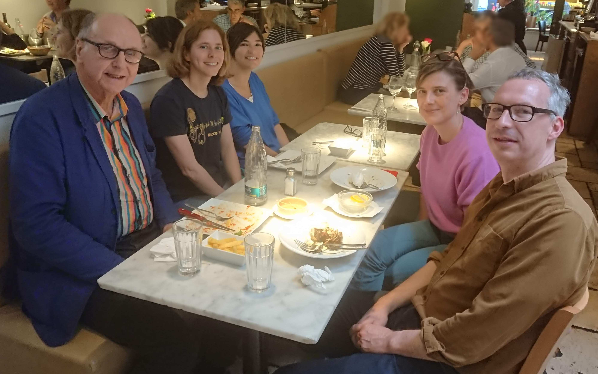

The Home of ResearchSpace
contact: info@kartography.org
Stephen Willats is a pioneer of conceptual art incorporating the principles of cybernetics and systems theory to
reveal how 'systems' impact people and their lived experience, but also promoting the need for people to
initiate change and transformation -
to generate a new equilibrium. For this, art has a significant role to play, as does heritage and history. His new exhibition,
“Time Tumbler” at Victoria Miro, London, is a reminder of our current critical need to address change
and transformation which means changing our thinking about how the world works, and challenging static, cartesian (reduction into separate
parts)
and aspects of postmodern thinking.

Stephen’s original idea for 'Time Tumbler' came after a series of meetings with the ResearchSpace team at the British Museum.
Stephen is a constant advocate of artists communicating with people outside the confines of institutional walls.
From his notes of the meetings at the Museum he associates “the institution and its architecture as a ‘time box’
where objects and artefacts remained trapped within a monolithic culture, isolated from the complexity of the real
world”.1 He was critical of the “linear” and “homogeneous”2 nature of time that museums represent
and was fascinated by the idea of taking them out of their ‘resting places’ and making
them “available and usable again…within the lives of viewers.”1 This is something that many museums have themselves
been doing.
Time Tumbler draws on second order cybernetics, a reflexive version of a theory originally conceived by
an MIT mathematician Norbert Wiener which developed from the transdisciplinary collaboration of scientists during the second world war.
It was part of a rejection of traditional science or scientism, focused instead on the interdependence of,
and communication between systems whether mechanical, social or biological - now firmly part of modern science. ResearchSpace
equally is about supporting thinking and the arrangement and expansion of patterns of information to generate knowledge which is
open to wider participation.
The first serious attempt at describing heritage data systems by Robert Chenhall (an anthropologist
and archaeologist working in and with museums) in the 1960s was also heavily influenced by Norbert Wiener’s Cybernetics.
This is clear in his presentation at a 1968 conference on the ‘Potential use of Computers in Museums’, which was also closed
by a speech from the then Director of the Metropolitan Museum, Thomas Hoving. His speech cites Wiener’s book, “The Human Use of
Human Beings” that he had read while on an archaeological dig and which changed his mind (although not necessarily his contemporaries)
on the then divisive two cultures (science and humanities) debate. It showed a path for greater convergence of ideas,
again based on the interdependency and universaility of systems, regardless of the discipline. Willat's takes the concept of cybernetics into society through his art.
However, museums failed to follow up on these early developments in cybernectics and systems theory which are now prominent
as we understand the fragility of the planet and the complexity of relationships, which when damaged, cause social and evironmental
problems. The socially and environmentally oriented
form of cybernetics developed during the 1960s, and used by Stephen, was inspired by the anthropologists Margeret Mead and Gregory Bateson
and developed by others, like the philosopher Heinz von
Foerster and by Gordon Pask, who’s work on Conversation Theory Stephen also draws upon.

Stephen wanted to collaborate with the ResearchSpace team based on a common design vision using a 'systems' approach
and used in the design of the ResearchSpace Platform. It was to produce a public interactive system using a network
of digital representations and a carefully constructed framework for communication based on ancient objects.
The system would be placed in everyday places, like a post office or a local shop, and used as a basis for actual
communication between people who themselves replaced the stilted top down institutionalised language of
the museum with their new narrative, facilitating a conversation more relevant to their own thinking and
lives and revealing significance using the objects as a facilitator and attractor. Significantly,
the Time Tumbler exhibition addresses the issues of historical contingency, an element often missing from the system theory mindset.
In a separate presentation at a conference organised by the Contemporary and Historical Archaeology in Theory
(CHAT) given by the ResearchSpace team at the Museum of London Docklands building, a visual knowledge map was
presented comparing the daily lives of Ancient Egyptian and Nubian settlers and their community cohesion with
modern settlements, high rise flats in London, highlighted in some of Stephen’s work - see for example,
https://www.tate.org.uk/art/artworks/willats-living-with-practical-realities-t03296. The high rise settlements were
originally conceived as places or systems of community that had been abandoned by the government and local councils
changing the dynamic and forming a new stasis that incorporated isolation, loneliness and fear as part of its
feedback mechanism, producing negative effects for its inhabitant. Similarly the concept of visual knowledge maps,
created as part of the ResearchSpace system, allowed for a digital environment to represent changing
constellations of historical facts, designed to be participatory and inclusive.
Time Tumbler the Exhibition runs from the 22 November 2023–13 January 2024, with details at
https://online.victoria-miro.com/stephen-willats-london-2023/
The book is available at
https://www.victoria-miro.com/store/publications/350".
Bibliography
1. Willats, Stephen. 2023. Time Tumbler. Victoria Miro. (Introduction by John Kesley)
2.Benjamin, Walter. 1999. ‘Theses on the Philosophy of History’. In Illuminations, New Ed edition, 245–58. London: Pimlico.